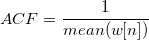

サンプリング間隔を指定します。デフォルトは <自動>で、これは自動に計算される間隔に対応しています。詳細についてはアルゴリズムのセクションをご覧下さい。
周波数の漏れを抑えるのに使用するウィンドウの種類を指定します。
- 四角
- Welch
- 三角
- Bartlett
- Hanning
- Hamming
- Blackman
- Gaussian
- Kaiser
詳細については、FFTのアルゴリズムをご覧下さい。
入力データに適用したウィンドウによって生じた変更を補正するためのウィンドウ補正因子です。
- なし: 修正なしが、適用されます。
- 振幅: 振幅修正が適用されます。狭周波数帯データの真の振幅が必要な場合に使用します。振幅修正ファクターは、次のように定義されます。
- 
- パワー: エネルギー補正が適用されます。データの真のエネルギーレベルが必要な場合、使用します。パワー修正ファクターは、次のように定義されます。
![ECF=\sqrt{\frac {1}{mean(w[n]^2)}}](../images/The_FFT1_Dialog_Box/math-f218d600f2bcb9bc9ae2a4dbf726acb5.png "ECF=\sqrt{\frac {1}{mean(w[n]^2)}}")
複素数、実数、虚数、マグニチュード、二乗マグニチュードの正規化を行うかどうかを指定します。デフォルトはFalseです。振幅のようなその他の出力は、この変数によって影響を受けません。詳細についてはアルゴリズムのセクションをご覧下さい。
低周波数成分を中央にするために結果を再配置するか指定します。
位相の巻き解消するかどうかを指定します。
工学分野または科学分野で使われる指数位相ファクターの符号を指定します。
- -1 (工学分野): 位相ファクターの符号は科学分野とは逆になります。
- +1 (科学分野): 位相ファクターは『Numerical Recipes in C, 2nd edition』の503ページに記載の公式に従って設定されます。
パワーが計算されるナイキスト間隔を指定します。
- <自動>:: 入力信号が実数の場合、片側が選択されます。そうでなければ両側が選択されます。このオプションが選択されると、入力データを見て複素数かどうかを決定します。入力データがComplexデータ型の列に保存されていてもデータには実数部しかない場合、複素数ではなく、実数とみなし、片側スペクトルに結果を入れます。 あるいは、入力データが虚数部としてすべてゼロを持つ場合、Originはこの入力データを実数とみなし、片側スペクトル生成します。
- 片側: 片側のパワーが計算されます。
- 両側: 片側のパワーが計算されます。
パワー密度規格化の手法を指定します。詳細についてはアルゴリズムのセクションをご覧下さい。
- MSA-平均二乗振幅: 平均平方振幅法
- SSA-二乗和振幅: 二乗和振幅法
- TISA-時間間隔二乗振幅: 時間積分2乗振幅法
ダイアログでのプレビュー表示を指定します。
なし, 振幅/位相, パワ/位相, 振幅, 虚数, マグニチュード, 位相, パワー, 実数, 実数/虚数, dB, 正規化dB, RMS振幅, 二乗振幅 , 二乗マグニチュード